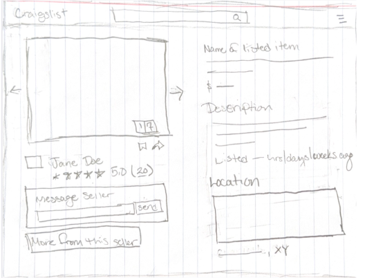
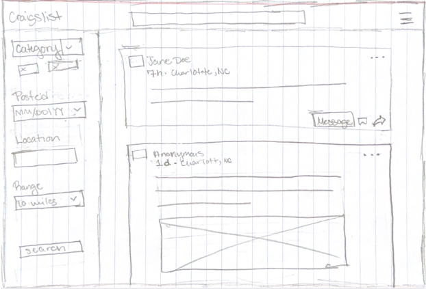

Week 2 – Design Concept & Sketches
Overview
In Week 2, we translated our usability findings into design goals and early visual concepts. We focused on improving navigation, readability, and overall user experience through both functional and aesthetic changes.
Design Concept Statement
We are redesigning Craigslist, a ’90s-era message board and marketplace platform. The current interface suffers from poor navigation, overwhelming text density, and lack of visual hierarchy. Users struggle to parse the homepage due to the large volume of equally weighted text and unclear organization of categories. Our redesign improves usability by introducing a centralized search experience, collapsing categories into a structured navigation menu, and emphasizing key actions. We also improve readability through better typography, spacing, and color usage. Additionally, our concept includes responsive layouts, visual feedback for user actions, form validation, and accessibility features such as dark mode to enhance the overall user experience.
Visual Enhancement Design Goals
- Improve readability by increasing text size, spacing, and contrast between elements.
- Create a consistent color system that reinforces hierarchy and usability.
- Reduce visual clutter by organizing content into structured sections and layouts.
- Enhance visual hierarchy by differentiating headings, labels, and interactive elements.
- Use whitespace intentionally to guide user attention and improve scanning.
Paper Sketches
Listing Detail Page (Desktop)

Focuses on a clearer layout with a large image area, structured description section, and visible seller interaction options.
Search Results Page (Desktop)

Introduces a filter sidebar and card-based listings to improve readability and scanning of results.
Design Impact
These early concepts directly address the usability issues identified in Week 1. By simplifying navigation, improving layout structure, and enhancing visual clarity, the redesign creates a more intuitive and user-friendly experience. These sketches serve as the foundation for future wireframes and prototypes.